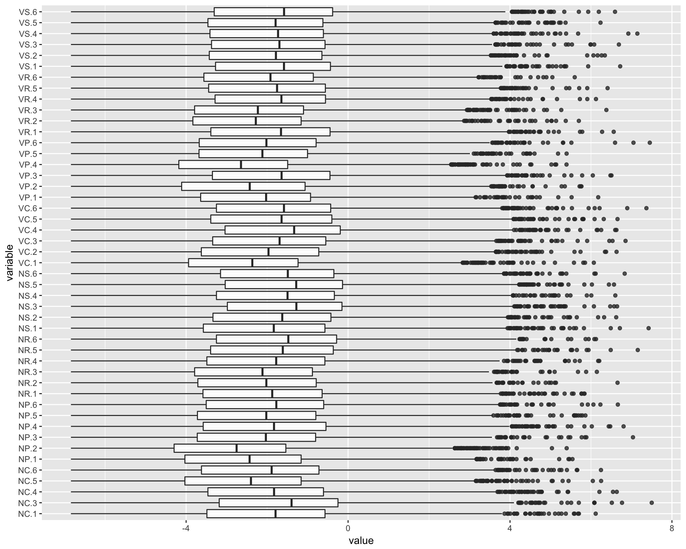
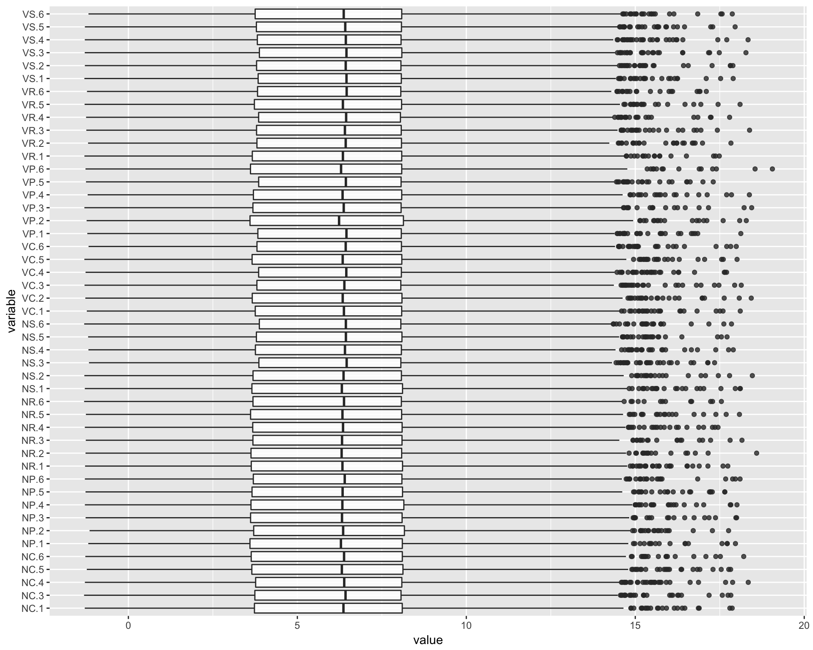
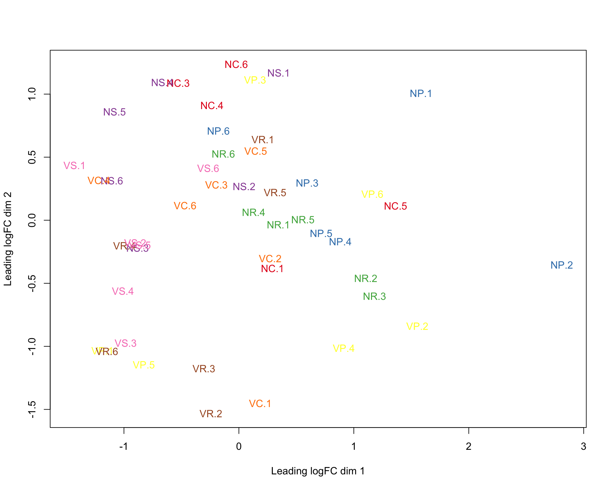
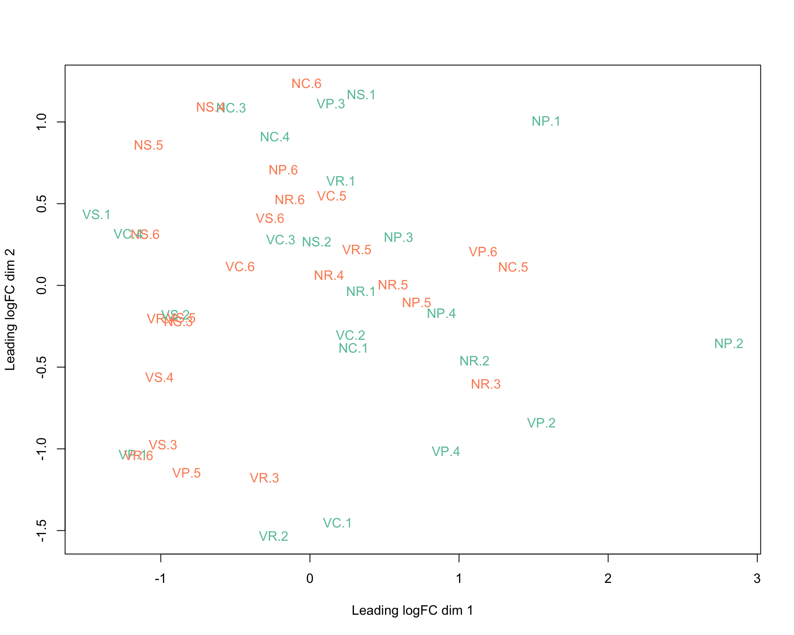
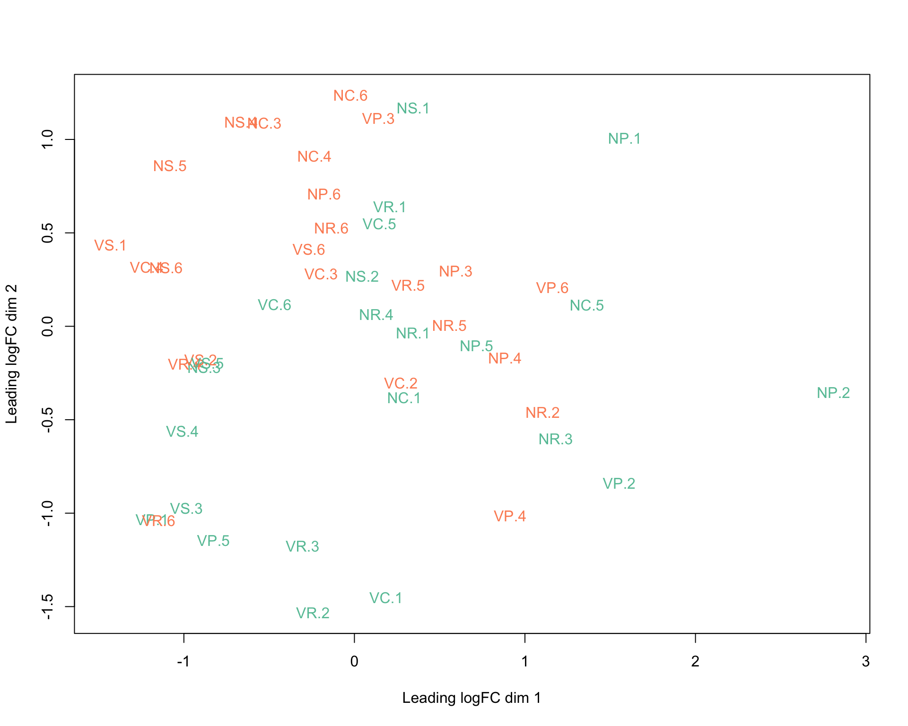
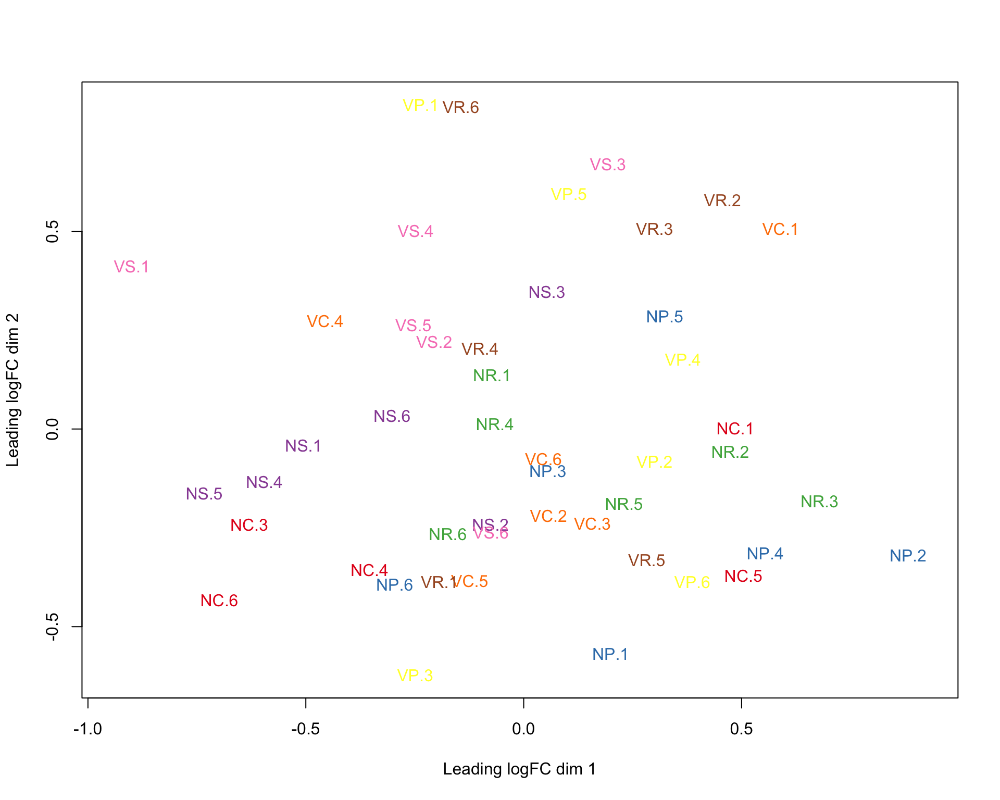
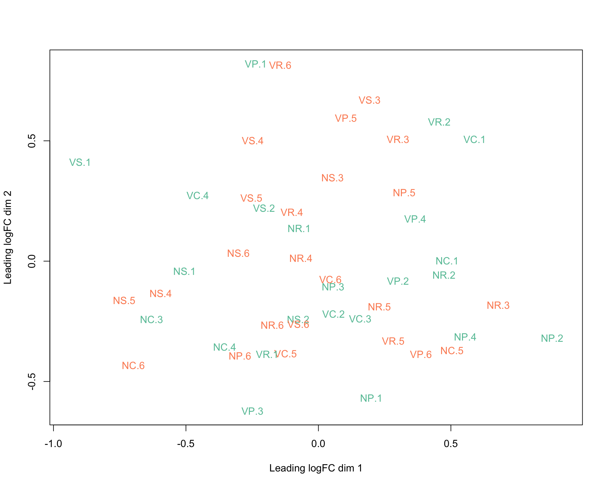
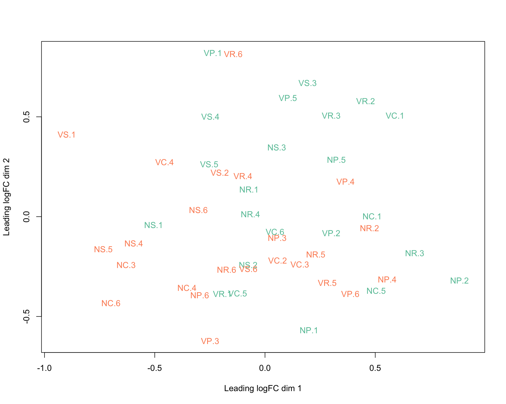
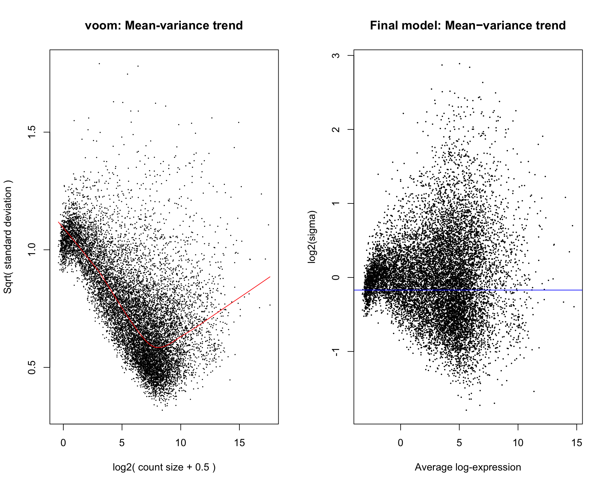

library(limma)
library(Glimma)
library(GGally)
library(ggplot2)
library(plyr)
comparison <- 2
countSample <- 1
numSample <- 8
outPath <- paste0("/Users/lindz/bigPint/tblshoot/RemSamples/Compare", comparison)
thisPath <- "/Users/lindz/bigPint"
beeCounts <- read.delim(file=paste0(thisPath, "/AllLaneCount.txt"), row.names=1, stringsAsFactors = FALSE)
colnames(beeCounts) <- c("NC.1", "NC.2", "NR.1", "VR.1", "NS.1", "VP.1", "NS.2", "VR.2", "NP.1", "VP.2", "VC.1", "NP.2", "VP.3", "NP.3", "VS.1", "VS.2", "VC.2", "NC.3", "VP.4", "NC.4", "NR.2", "VC.3", "VC.4", "NP.4", "VR.3", "NC.5", "VS.3", "NP.5", "VC.5", "VS.4", "NS.3", "VS.5", "VP.5", "NR.3", "NR.4", "VC.6", "NS.4", "NC.6", "NP.6", "VR.4", "NR.5", "NR.6", "NS.5", "VP.6", "NS.6", "VR.5", "VR.6", "VS.6")
beeCounts <- beeCounts[ , order(names(beeCounts))]
beeCounts <- beeCounts[ ,-comparison]
x <- DGEList(counts=beeCounts)
group <- factor(c(rep("NC",6), rep("NP",6), rep("NR",6), rep("NS",6), rep("VC",6), rep("VP",6), rep("VR",6), rep("VS",6)))
lane <- as.factor(c("L12","L12","L12","L12","L34","L34","L12","L12","L12","L12","L34","L34","L12","L12","L34","L34","L34","L34","L12","L12","L34","L34","L34","L34","L12","L12","L12","L12","L34","L34","L12","L12","L12","L12","L34","L34","L12","L12","L34","L34","L34","L34","L12","L12","L34","L34","L34","L34"))
day <- as.factor(c("1","1","2","2","1","2","1","1","2","2","1","2","1","2","1","1","2","2","1","1","1","2","2","2","1","2","2","2","1","1","1","1","2","2","1","2","1","1","1","2","2","2","2","2","1","1","1","2"))
group <- group[-comparison]
lane <- lane[-comparison]
day <- day[-comparison]
x$samples$group <- group
x$samples$lane <- lane
x$samples$day <- dayTransform and remove low counts. This time, try normalization first.
keep.exprs <- rowSums(x[[1]]>countSample)>=numSample
x <- x[keep.exprs,, keep.lib.sizes=FALSE]
x <- calcNormFactors(x, method = "TMM")
libRatio <- max(x[[2]]$lib.size)/min(x[[2]]$lib.size)
rld <- rlog(x[[1]])Make boxplots
ggparcoord(data.frame(log(x[[1]]/colMeans(x[[1]]))), columns=1:47, alphaLines=0, boxplot=TRUE, scale="globalminmax") + coord_flip()Warning: Removed 23264 rows containing non-finite values (stat_boxplot).
ggparcoord(data.frame(rld), columns=1:47, alphaLines=0, boxplot=TRUE, scale="globalminmax") + coord_flip()
Create MDS plots
library(RColorBrewer)
lcpm <- cpm(x, log=TRUE)
par(mfrow=c(1,2))
col.group <- group
levels(col.group) <- brewer.pal(nlevels(col.group), "Set1")
col.group <- as.character(col.group)
col.lane <- lane
levels(col.lane) <- brewer.pal(nlevels(col.lane), "Set2")Warning in brewer.pal(nlevels(col.lane), "Set2"): minimal value for n is 3, returning requested palette with 3 different levelscol.lane <- as.character(col.lane)
col.day <- day
levels(col.day) <- brewer.pal(nlevels(col.day), "Set2")Warning in brewer.pal(nlevels(col.day), "Set2"): minimal value for n is 3, returning requested palette with 3 different levelscol.day <- as.character(col.day)plotMDS(lcpm, labels=colnames(lcpm), col=col.group)
plotMDS(lcpm, labels=colnames(lcpm), col=col.lane)
plotMDS(lcpm, labels=colnames(lcpm), col=col.day)
plotMDS(rld, labels=colnames(lcpm), col=col.group)
plotMDS(rld, labels=colnames(lcpm), col=col.lane)
plotMDS(rld, labels=colnames(lcpm), col=col.day)
glMDSPlot(lcpm, labels=paste(group, lane, day, colnames(lcpm), sep="_"), groups=x$samples[,c(1,4,5)], launch=FALSE)Create design matrix. There are many ways to setup a design matrix. Here, we removed the intercept from group (the first factor), but kept the intercept from lane. This allows us to do contrasts with group more easily.
design <- model.matrix(~0+group+lane)
colnames(design) <- gsub("group", "", colnames(design))
contr.matrix <- makeContrasts(
NCvsNP = NC-NP,
NCvsNR = NC-NR,
NCvsNS = NC-NS,
NCvsVC = NC-VC,
NCvsVP = NC-VP,
NCvsVR = NC-VR,
NCvsVS = NC-VS,
NPvsNR = NP-NR,
NPvsNS = NP-NS,
NPvsVC = NP-VC,
NPvsVP = NP-VP,
NPvsVR = NP-VR,
NPvsVS = NP-VS,
NRvsNS = NR-NS,
NRvsVC = NR-VC,
NRvsVP = NR-VP,
NRvsVR = NR-VR,
NRvsVS = NR-VS,
NSvsVC = NS-VC,
NSvsVP = NS-VP,
NSvsVR = NS-VR,
NSvsVS = NS-VS,
VCvsVP = VC-VP,
VCvsVR = VC-VR,
VCvsVS = VC-VS,
VPvsVR = VP-VR,
VPvsVS = VP-VS,
VRvsVS = VR-VS,
levels = colnames(design))par(mfrow=c(1,2))
v <- voom(x, design, plot=TRUE)
vfit <- lmFit(v, design)
vfit <- contrasts.fit(vfit, contrasts=contr.matrix)
efit <- eBayes(vfit)
plotSA(efit, main="Final model: Mean−variance trend")
myDat <- as.data.frame(summary(decideTests(efit)))
myDat <- myDat[which(myDat$Var1 %in% c(-1,1)),]
allPairs <- ddply(myDat, .(Var2), summarise, Freq=sum(Freq))numGenes <- nrow(x[[1]])
results <- list()
results[["libRatio"]] <- libRatio
results[["countSample"]] <- countSample
results[["numberSample"]] <- numSample
results[["numGenes"]] <- numGenes
results[["allPairs"]] <- allPairs# Save data
saveRDS(results, file=paste0(outPath, "/results.Rds"))